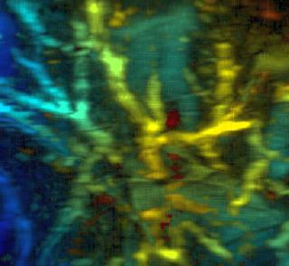
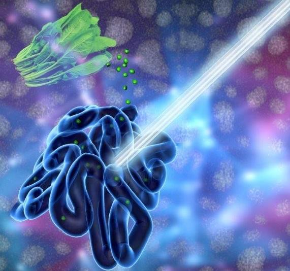
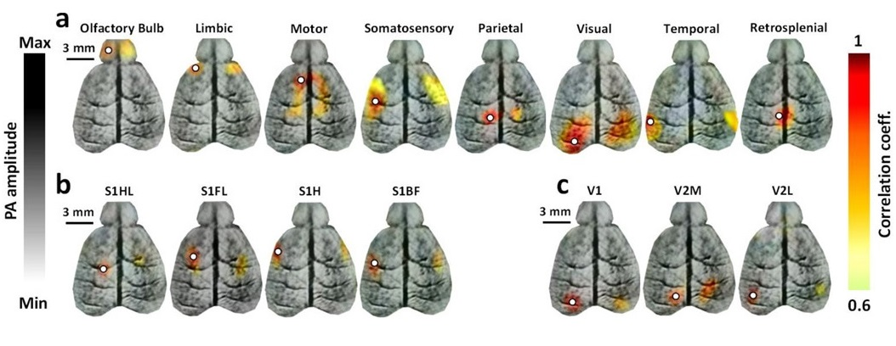
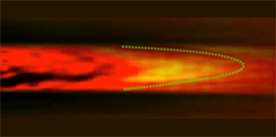
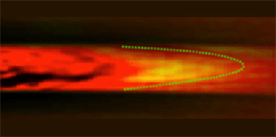
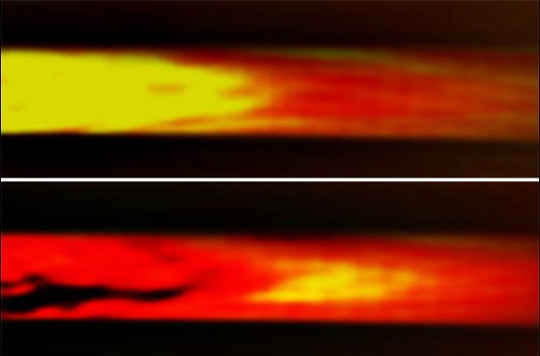
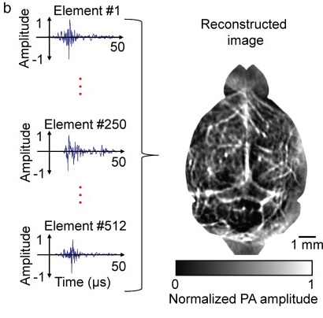

Optical & Ultrasonic Imaging Laboratory
"New laser diodes promise compact optoacoustic platforms" Optics.org, 2017.

"Veggie juice that illuminates the gut" EurekAlert, 2016.

"Photoacoustics enables high-res functional connectivity imaging of the mouse brain", BioOptics World, 2014.

"Imaging technology in mice enhances human brain research", SPIE Newsroom, 2014.
"Going with the Flow", Physics Synopsis, 2013.

"Thermal technique improves blood-flow measurements", Physics World, 2013.

"ScienceShot: A Window Into Your Veins", Science. 2013.

"Noninvasive photoacoustic computed tomography of mouse brain metabolism in vivo", F1000Prime Article Recommendations, 2013.

"Wang, Anastasio to adapt imaging technology for lab use with NIH grant", Washington University Newsroom, 2013.